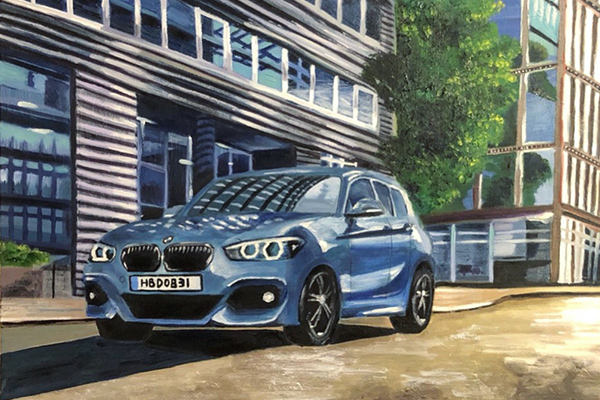
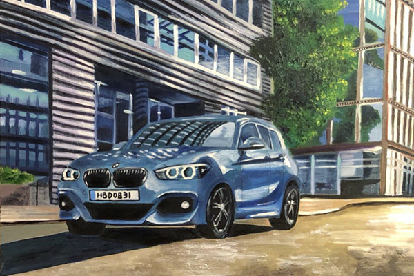
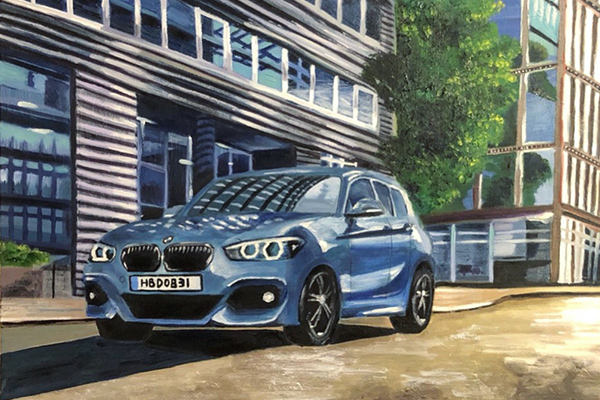

Oil Painting
 

The interest in painting was cultivated during my childhood and further developed when I opted to take the lessons of learning painting. To date, I having the experience of painting for over ten years, including sketch, pastel, charcoal sketch, watercolor, and oil painting. I have always been fascinated by works and how the world is represented through the eyes of others. Hope my works can bring the same feeling to others. The following are selected works of my past creations which I done for self fulfillment.
